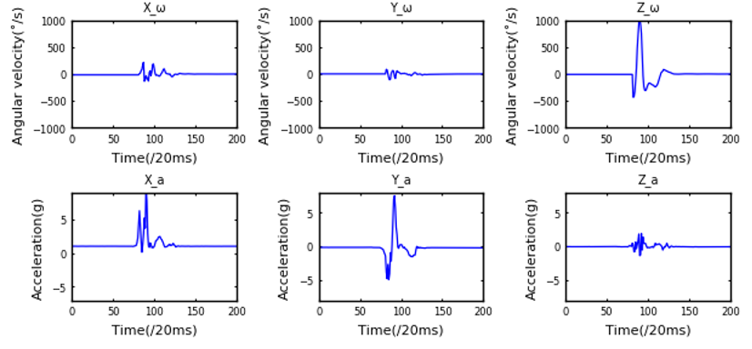
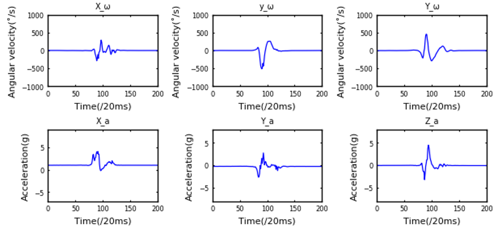
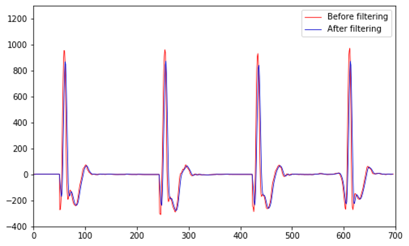
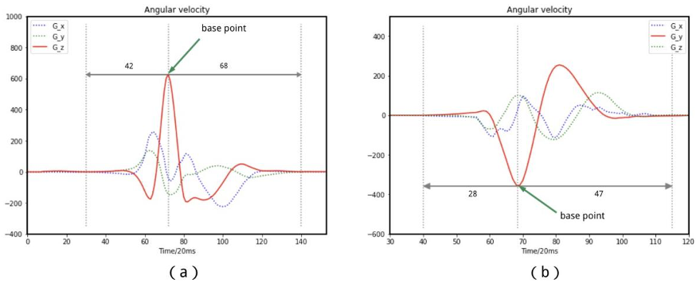
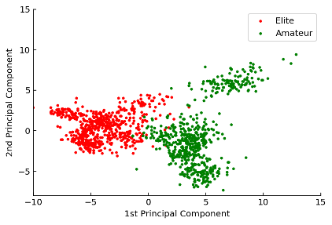
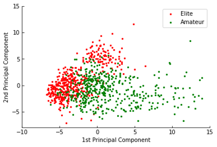
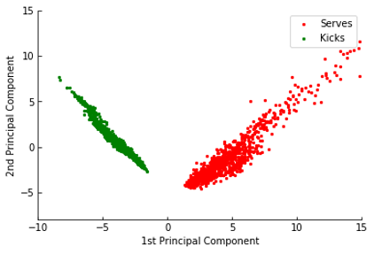
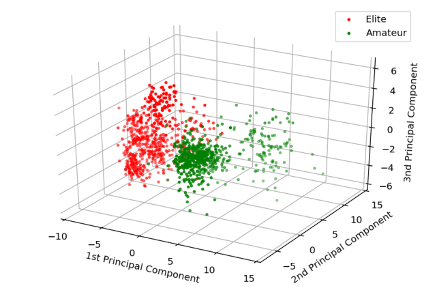
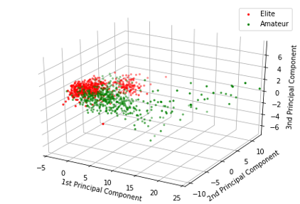
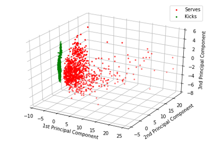

IoT for Next-Generation Shuttlecock Sports Training
At present, there are very few researches on shuttlecock movements based on wearable devices of the Internet of Things. Most of them are movement analysis and research carried out by visual observation and video playback. This method is only suitable for analysis after competitions. Its limitations are It can't reach the accuracy of subtle movements, nor can it be used for the team's daily training. In the research of this project, we propose a motion recognition and assessment system based on Wearable Sensing Devices(WSD). The main contributions of this project include the following aspects: 1) using WSD to collect motion data and assess the skill level of the shuttlecock motion through the six-dimensional motion data generated by the WSD. 2) Using machine learning algorithms and theories of signal characteristics, a shuttlecock motion recognition method based on signal data analysis and machine learning algorithms is proposed. 3) Through the comparison of experimental results, the performance differences of different machine learning algorithms in the recognition and assessment of shuttlecock motions are analyzed.
How does the system work?
Here we detail the complete technical solution developed to build a smart shuttlecock action recognition and assessment system based on low-power Bluetooth communication and Cloud technology. It contains hardware and software parts as well as sensor placement locations. The general system setup principles are shown in picture below.
The system consists of a sensor node, a high- speed camera, a mobile device, a cloud server, and a laptop. We used this system to collect motion data from badminton players and to recognize different badminton actions. The general work principle for the system is that data collected by an WSD was sent to a mobile device through BLE. Once the mobile phone received the data, it sent the motion raw data to the remote server via Cloud technology. After collecting all data, users could then view shuttlecock players’ analyzed data with client devices.
How does the algorithm work
After data collection, a typical machine learning data processing method was implemented in our shuttlecock actions recognition and skill level assessment system. This framework includes preprocessing, segmentation, feature extraction, dimensionality reduction, and classification. Each stage of this framework can be implemented using a variety of methods. To demonstrate performance in this section, we utilized the support vector machine (SVM) classifier.
- The picture below displays the raw data captured by the WSD. The first two rows show the angular velocity and acceleration from a serve action, while the second show the inertial information from six-axes for the kick actions.
- The picture below displays the action data has been processed，witch contains Slide Average filtering, fixed window feature extraction
- We used PCA to preprocess the data before classification because PCA shows better performance compared to nonlinear dimensionality reduction. The picture below display the distribution of different shuttlecock action and different skill level data after PCA algorithm.
 


  
  
Conclusion
The performance levels represented by the skill data were thus estimated by SVM, kNN, LR, and RF classifiers. Comparisons of these classifiers show SVM achieves high accuracy in serve actions and kick actions recognition and in assessing levels of players in executing different shuttlecock action. Therefore, we envision that the IoT framework presented in this project will play an important role in sports analysis where ancle actions are important.
- The tables below compare shuttlecock action recognition and skill level assessment system performance in different actions
| Actions | Precision | Recall | F1-score |
| # Serve | 100% | 1.00 | 1.00 |
| # Kick | 100% | 1.00 | 1.00 |
| # Average | 100% | 1.00 | 1.00 |
| # Skill Level(Serve) | Precision | Recall | F1-score |
| # Elite | 97% | 0.99 | 0.99 |
| # Amateur | 98% | 0.96 | 0.96 |
| # Average | 98% | 0.98 | 0.98 |
| # Skill Level(Kick) | Precision | Recall | F1-score |
| # Elite | 95% | 0.95 | 0.95 |
| # Amateur | 95% | 0.96 | 0.96 |
| # Average | 95% | 0.96 | 0.96 |
Datasets
This study recruited six shuttlecock elite college athletes and six college Amateur students who have never been in shuttlecock sports, a total of twelve volunteers, and divided them into two groups according to their skill level, namely the Elite group and the Amateur group. After introducing a simple shuttlecock action to the Amateur group, put an WSD on the outside of the right ankle uniformly, and specify the serve range and effective landing range
- After analyzing and filtering the data, a total of 2481 sets of valid action data samples were obtained, of which the number of instep serving samples was 1188, and the number of inside kicking samples was 1,293. The corresponding numbers of each action and sample are shown in table below
| Actions | Elite | Amateur | Total |
| # Serve | 612 | 576 | 1188 |
| # Kick | 657 | 636 | 1293 |
Publications
Graduation Thesis
Patents
- Method and system for recognizing shuttlecock action and level assessment based on wearable device.
Status: Under Review.
Zhiyong Tang, Xiao Zhang, Xin Xiang, Zixin Li
Awards
- Received Excellent Graduation Thesis from SCUEC 2021.
- Received First Prize of Hubei Province Undergraduate Thesis University Alliance Defense